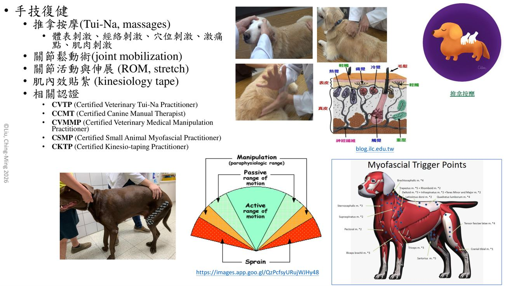
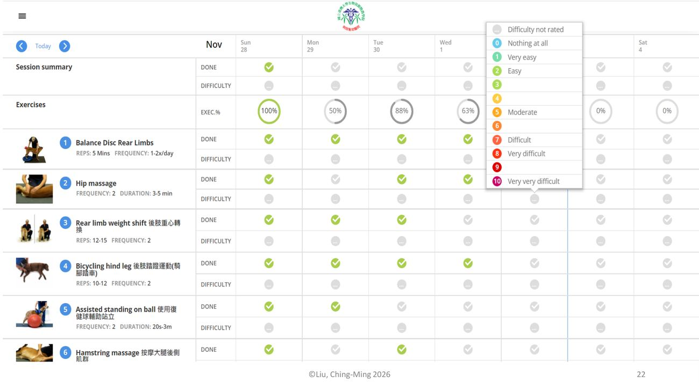
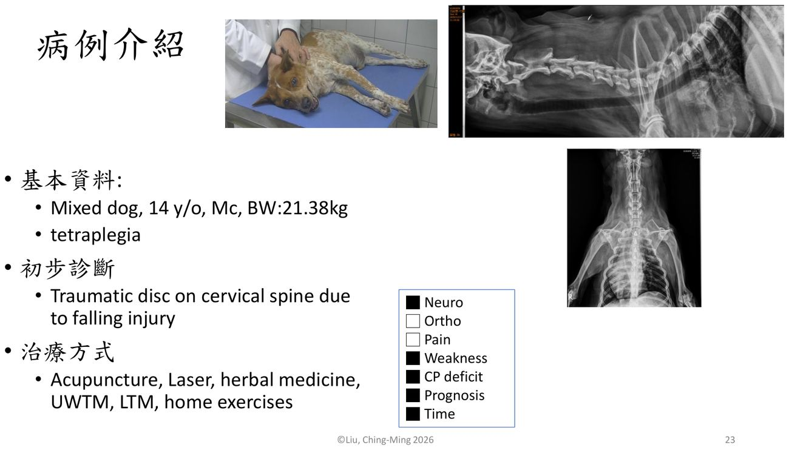
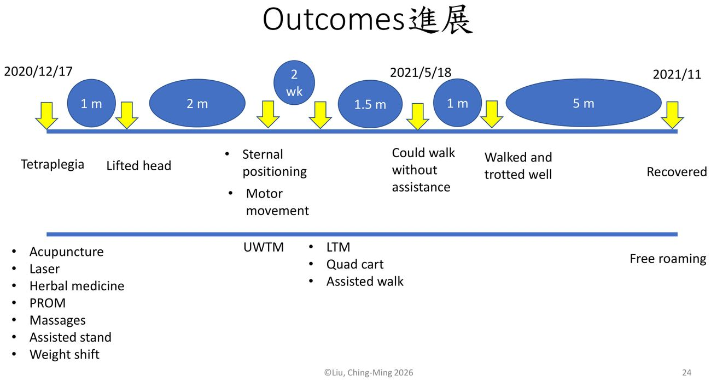

大方向與重點摘要
- 這章在講什麼
- 整門課的地圖：獸醫復健（康復）包含哪些領域（運動醫學、復健與物理治療、疼痛管理）、用哪些方法（理療儀器、運動復健、手技、中獸醫針灸），以及在歐美與台灣由誰來做、要有什麼認證。最後用臺大動物醫院復健科的設備與一隻四肢癱瘓老犬的病例，示範這些方法怎麼串在一起。
- 為什麼重要
- 後面每一週都是這張地圖的一塊：神經科（第 3 週）、骨科（第 4 週）、儀器（第 5、6 週）、疼痛與老年（第 7 週）、檢查與步態（第 8 週）、針灸推拿按摩（第 9 週）。先知道整體分類，後面的內容比較容易歸位。
- 這章要抓的重點
-
- 三大領域：運動醫學（工作犬、競技犬）、復健與物理治療（骨科、神經科、老年、輔具義肢）、疼痛管理。
- 理療七項：冷熱敷、水療、電療、雷射、治療超音波、脈衝磁圈、震波。
- 運動復健的五個目標：關節、本體感覺、肌肉、平衡、大腦活化。
- 手技與針灸：推拿按摩、關節鬆動術、ROM 與伸展、肌內效貼紮；針灸用於止痛、幫助修復、恢復功能。
- 人醫與獸醫的分工：診斷及治療由醫師／獸醫師負責；台灣由動物醫事助理輔助復健治療。
- 專科與認證：DACVSMR／DECVSMR 專科（住院醫師訓練 3–5 年）；CCRP、CCRT、CCRV、CCAT 等國際認證；臺大復健及整合醫學科 2018 試辦、2020 成立正式科別。
- 病例：14 歲混種犬墜落造成頸椎外傷性椎間盤、四肢癱瘓，約 11 個月從癱瘓到恢復自由活動。
- 容易混淆
- DACVSMR 與 CCRP：前者是完成住院醫師訓練的專科獸醫師（Diplomate），後者是上課考試取得的認證（Certified），層級不同。UWTM 與 LTM：水中跑步機與陸上跑步機（講義 p.20 寫「路上跑步機」）。PW 與 CW：超音波的脈衝波與連續波，不是兩種機器（詳見第 5 週）。
- 考試可能怎麼問
（推測） - 獸醫復健的項目分類；常用理療有哪些；運動復健的目標；認證縮寫配對（CVA、CVPP、CCRP、CKTP、CVTP）；人醫與獸醫分工比較表；臺大復健科成立年份。
內容以老師講義為主體。標示「補充」的段落（含「讀書補充Note」）是講義以外的延伸，例如縮寫的英文全名多數是整理者補的；標示「推測」的是依講義強調處推測的出題方向，不是考古題。考試範圍以老師上課為準。圖片為老師講義截圖。
神經／骨科／疼痛、步態分析
止痛、消炎、促進修復
關節、肌肉、本體感覺、平衡
飼主執行、App 追蹤
獸醫復健的項目 Scope of Veterinary Rehabilitation
講義把獸醫復健分成三塊：運動醫學、復健與物理治療、疼痛管理。每一塊後面都有對應的課。
三大領域必考
| 領域 | 講義列的對象與例子（p.4） | 本課對應 |
|---|---|---|
| 運動醫學 Sports medicine | 敏捷犬（Agility）、競速犬（Racing）、雪橇犬（Sled dog）、工作犬（軍犬、嗅探犬、服務犬…） | 第 11 週運動復健、第 15 週寵物運動產業 |
| 復健與物理治療 Rehabilitation and Physical therapy | 骨科 Orthopedics：骨折修復術後、RCCL、TPLO… | 第 4 週 |
| 神經科 Neurology：IVDD、DLSS、DM… | 第 3 週 | |
| 老年 Geriatrics：認知（cognitive）、肌少症（sarcopenia）… | 第 7 週 | |
| 矯具與義肢 Orthotics, prosthetics | 第 4 週（截肢與義肢） | |
| 疼痛管理 Pain management | 術後、骨關節炎（OA）、髂腰肌拉傷（iliopsoas strain）、肌腱或韌帶損傷（如二頭肌腱病變 biceps tendinopathy、MSI）…；相關認證 CVPP | 第 7 週 |
講義縮寫的全名理解
| 縮寫 | 英文全名 | 中文 |
|---|---|---|
| RCCL | Ruptured cranial cruciate ligament | 前十字韌帶斷裂 |
| TPLO | Tibial plateau leveling osteotomy | 脛骨高原平整截骨術（前十字韌帶斷裂的手術） |
| IVDD | Intervertebral disc disease | 椎間盤疾病 |
| DLSS | Degenerative lumbosacral stenosis | 退化性腰薦椎狹窄 |
| DM | Degenerative myelopathy | 退化性脊髓病 |
| OA | Osteoarthritis | 骨關節炎 |
| MSI | Medial shoulder instability | 肩關節內側不穩定 |
補充：講義 p.4 只寫縮寫，上表的英文全名與中文是整理者補的；各疾病的復健方案見第 3、4 週筆記。
常用理療復健 Physical Modalities
講義 p.5 列出七種「常用理療復健」，就是第 5、6 週兩份儀器講義的主角。
七種常用理療必考
| 理療（p.5） | 臺大復健科的設備（p.18） | 詳細內容 |
|---|---|---|
| 冷、熱敷 | — | 第 5 週 |
| 水療 | 水療室、水中跑步機（p.19） | 第 6 週 |
| 電療 | 經皮電刺激儀：TENS、NMES | 第 5 週 |
| 雷射 | 雷射治療儀：Class III、Class IV | 第 6 週 |
| 治療超音波 | 超音波治療儀：PW、CW | 第 5 週 |
| 脈衝磁圈 | 脈衝式磁波：PEMF、tPEMF | 第 6 週 |
| 震波 | 震波治療儀：Focus、Radial | 第 6 週 |
| 縮寫 | 英文全名 | 一句話 |
|---|---|---|
| TENS | Transcutaneous electrical nerve stimulation | 經皮神經電刺激，以止痛為目的 |
| NMES | Neuromuscular electrical stimulation | 神經肌肉電刺激，讓肌肉收縮、減少萎縮 |
| PW／CW | Pulsed wave／Continuous wave | 超音波的脈衝與連續輸出模式 |
| PEMF／tPEMF | (Targeted) pulsed electromagnetic field | 脈衝電磁場；t＝targeted（標靶式） |
| Focus／Radial | Focused／Radial shockwave | 聚焦式與放射式震波 |
補充：講義 p.5、p.18 只列名稱與縮寫，上表英文全名與「一句話」是整理者補的；TENS 與 NMES、PW 與 CW 的參數與差別請以第 5 週講義為準。
運動復健 Therapeutic Exercise
運動復健分「目標」「門診常用項目」「居家項目」三層；目標是之後各疾病頁反覆出現的五個詞。
運動治療目標必考
關節
維持或改善關節活動度。
本體感覺
知道肢體在哪裡、怎麼擺。
肌肉
肌力與肌肉量。
平衡
站立與移動時的穩定。
大腦活化
認知刺激（老年犬尤其重要）。
補充：講義 p.6 只列五個目標名稱，卡片內的一句話是整理者的解釋。
常用項目理解
| 門診常用運動治療項目 | 常用居家運動復健 |
|---|---|
| 跨越橫桿（cavaletti）、復健球、平衡板、陸上跑步機、協助行走、核心肌肉訓練、激活大腦遊戲、擊掌 | 上下緩坡、坐站練習、重心偏移（weight shift）、關節活動 |
相關認證（p.6）：CSCC（Certified Canine Strength and Conditioning Coach，認證犬隻肌力與體能教練）、CCFT（Certified Canine Fitness Trainer，認證犬隻健身教練）。
補充：「cavaletti」是跨越橫桿的常用英文名稱，講義只寫中文。
手技復健與中獸醫 Manual Therapy & TCVM
不靠儀器、用手做的治療，以及中獸醫針灸。詳細內容在第 9 週（針灸推拿按摩）與第 11、13 週（手技、肌內效貼紮實作）。
手技復健的五種方法必考
| 方法（p.7） | 講義寫的內容 |
|---|---|
| 推拿按摩（Tui-Na, massages） | 體表刺激、經絡刺激、穴位刺激、激痛點、肌肉刺激 |
| 關節鬆動術（joint mobilization） | 圖示：主動活動範圍（active ROM）＜被動活動範圍（passive ROM）＜解剖界線，超過即扭傷（sprain）；manipulation 在生理範圍外操作 |
| 關節活動與伸展（ROM, stretch） | — |
| 肌內效貼紮（kinesiology tape） | 第 13 週實作 |
相關認證（p.7）：CVTP（Certified Veterinary Tui-Na Practitioner）、CCMT（Certified Canine Manual Therapist）、CVMMP（Certified Veterinary Medical Manipulation Practitioner）、CSMP（Certified Small Animal Myofascial Practitioner）、CKTP（Certified Kinesio-taping Practitioner）。

中獸醫：針灸必考
- 針灸的三個作用（p.8）：止痛、幫助修復、恢復功能。相關認證 CVA（Certified Veterinary Acupuncturist）。
- 中醫觀點（p.8 左下圖）：正常＝氣流暢；病原阻塞經絡 → 氣不流暢（瘀滯）→ 疼痛；針灸治療後恢復氣流暢 → 不痛。「通則不痛」（Where there is free flow of Qi, there is no pain）。
- 現代機轉（p.8 右下圖）：腦內啡釋放、門戶理論、細微創傷（組織傷害、有害刺激、急性發炎 → 免疫細胞、巨噬細胞、肥大細胞、血管擴張）。
門戶理論（gate control theory）：脊髓背角有一道「門」，粗的觸覺／壓覺神經纖維（Aβ）被刺激時會抑制細的痛覺纖維（Aδ、C）往上傳，所以刺激皮膚可以降低痛覺。細微創傷：針刺造成的小損傷引起局部發炎反應與血管擴張，促進血流與修復。以上兩點的解釋講義沒有寫，是整理者補充；針灸的完整內容見第 9 週。
人醫與獸醫的分工、專科與認證 Workforce & Certification
誰可以診斷、誰執行治療、誰協助：人醫、歐美獸醫、台灣獸醫三套制度對照。
復健醫療人醫及獸醫比較表必考
| 角色 | 人醫 | 獸醫（歐美） | 獸醫（台灣） |
|---|---|---|---|
| 診斷及治療 | 復健醫師 | 專科獸醫師（Diplomate）、獸醫師 | 獸醫師 |
| 復健治療 | 物理治療師（PT）、職能治療師（OT）、語言治療師 | 獸醫技術員（Vet. Tech.）、獸醫護士（Vet. Nurse）、物理治療師（PT＋CCRP） | 動物醫事助理：輔助復健治療 |
| 協助 | 助手 | 助理（Assist.） | 助理 |
表格的關鍵差異在中間那一列：人醫與歐美有專門執行「復健治療」的專業人員（PT、Vet. Tech.、Vet. Nurse），台灣目前由動物醫事助理「輔助」復健治療，診斷與治療仍由獸醫師負責。歐美物理治療師要再取得 CCRP 才能治療動物。
歐美專科獸醫師必考
- DACVSMR：Diplomate of American College of Veterinary Sports Medicine and Rehabilitation（美國獸醫運動醫學與復健學院專科）。
- DECVSMR：Diplomate of European College of Veterinary Sports Medicine and Rehabilitation（歐洲）。
- 分犬（canine）與馬（equine）兩個方向（tract）；住院醫師訓練 3–5 年。
- 講者頭銜中的「DACVSMR (Canine) Candidate」就是正在犬方向申請專科（p.1）。
國際認證課程理解
| 開課單位（p.11） | 認證 |
|---|---|
| University of Tennessee（UTCVM） | CCRP Certified Canine Rehabilitation Practitioner |
| Canine Rehabilitation Institute（CRI） | CCRT Certified Canine Rehabilitation Therapist；CCRN（technician/nurse）、CCRA（assistant） |
| Chi University | CCRV Certified Canine Rehabilitation Veterinarian；CCRVT（Veterinary Technician） |
| NC State Veterinary Medicine | CCAT Certified Companion Animal Rehabilitation Therapist；CCAA（Assistant） |
認證縮寫的結尾字母透露層級：-P Practitioner／-T Therapist／-V Veterinarian 是給獸醫或治療師；-N Nurse、-VT Veterinary Technician、-A Assistant 是給技術員與助理。（整理者歸納）
本課出現過的認證縮寫總表理解
| 縮寫 | 全名（講義原文） | 領域 |
|---|---|---|
| CVPP | Certified Veterinary Pain Practitioner | 疼痛管理 |
| CVA | Certified Veterinary Acupuncturist | 針灸 |
| CVTP | Certified Veterinary Tui-Na Practitioner | 推拿 |
| CKTP | Certified Kinesio-taping Practitioner | 肌內效貼紮 |
| CCMT／CVMMP／CSMP | Canine Manual Therapist／Veterinary Medical Manipulation Practitioner／Small Animal Myofascial Practitioner | 手技 |
| CSCC／CCFT | Canine Strength and Conditioning Coach／Canine Fitness Trainer | 運動與體能 |
| CCRP／CCRT／CCRV／CCAT | 見上表 | 復健 |
補充：講者頭銜中的 CVCH、CVFT 講義沒有展開，整理者不確定全名，故不列。
台灣（以臺大為例）必考
- 過去復健相關業務分在獸醫外科（獸醫骨科、獸醫神經科）。
- 獸醫復健及整合醫學科：2018 年開始運作（試辦、任務編組，成效卓著），2020 年成立正式科別。人員為認證獸醫師與動物醫事助理（p.10）。
臺大動物醫院寵物復健實況 NTUVH Rehabilitation Service
門診類別、評估設備與治療空間；這些設備在第 5、6、8 週會分別細講。
門診與空間看過
特殊診斷評估設備理解
| 設備（p.16） | 用途（補充） |
|---|---|
| 熱感應攝像儀 | 紅外線熱影像，看體表溫度分布（發炎區較熱、血流差的區域較冷） |
| 站立分析板 | 站立時四肢各自承重的比例，找出不願承重的肢 |
| 活動力測量器 | 戴在身上記錄日常活動量，追蹤治療前後變化 |
| 步態分析走道 | 行走時每一步的壓力與步態參數 |
補充：講義只列設備名稱，「用途」欄是整理者補的；評估方法見第 8 週〈復健檢查、評量以及步態分析〉。
治療空間與居家運動看過

病例介紹：頸椎外傷後四肢癱瘓 Case Report
一隻 14 歲大型混種犬，從四肢癱瘓到恢復自由活動約 11 個月；看每一階段換成什麼治療。
基本資料理解
| 基本資料 | 混種犬（Mixed dog），14 歲，已去勢公犬（Mc），體重 21.38 kg |
| 主要問題 | 四肢癱瘓（tetraplegia） |
| 初步診斷 | 墜落造成的頸椎外傷性椎間盤（traumatic disc on cervical spine due to falling injury） |
| 治療方式 | 針灸（Acupuncture）、雷射（Laser）、中草藥（herbal medicine）、水中跑步機（UWTM）、陸上跑步機（LTM）、居家運動（home exercises） |
| 問題清單勾選 | ■ Neuro □ Ortho □ Pain ■ Weakness ■ CP deficit ■ Prognosis ■ Time |
補充：CP deficit＝本體感覺（conscious proprioception）缺損。勾選「Prognosis」「Time」推測是指這個病例的重點包括預後判斷與恢復所需時間；講義沒有文字說明。

Outcomes 進展時間軸必考
| 時間（距上一階段） | 狀態 | 這階段加入的治療 |
|---|---|---|
| 2020/12/17 初診 | 四肢癱瘓（Tetraplegia） | 針灸、雷射、中草藥、被動關節活動（PROM）、按摩、協助站立（assisted stand）、重心轉移（weight shift） |
| ＋1 個月 | 能抬頭（Lifted head） | （延續） |
| ＋2 個月 | 能胸骨臥姿（sternal positioning）、出現自主運動（motor movement） | 水中跑步機（UWTM） |
| ＋2 週 | — | 陸上跑步機（LTM）、四輪輔助車（quad cart）、協助行走 |
| ＋1.5 個月（2021/5/18） | 不需協助可以行走 | |
| ＋1 個月 | 走與小跑都很好（walked and trotted well） | |
| ＋5 個月（2021/11） | 恢復（Recovered） | 自由活動（free roaming） |
- 治療隨功能升級：完全癱瘓時做被動的（PROM、按摩、協助站立）；出現自主運動後加水中跑步機（浮力減輕負重）；再進階到陸上跑步機與輔助車行走。這是第 3 週「復健四階段」的實例。
- 時間長：從初診到能自己走約 5 個月，到完全恢復約 11 個月。病例勾選「Time」，衛教時要讓飼主知道神經復健是以月計。
- 老年（14 歲）、大型犬（21 kg）、四肢癱瘓，仍可能恢復；預後判斷見第 3 週深層痛覺等指標。
以上三點是整理者的解讀，講義只有時間軸，沒有文字分析。

課程安排與參考文獻 Course Schedule
16 週課表（第 10 週期中考、第 16 週期末考）與老師列的參考書。
課程安排看過
| 週 | 日期 | 主題 | 本站筆記 |
|---|---|---|---|
| 1 | 9/9 | 伴侶動物復健及物理治療學概論與課程說明 | 本頁 |
| 2 | 9/16 | 復健相關基礎理論（復健相關解剖學及生理學） | 第 2 週 |
| 3 | 9/23 | 常見伴侶動物神經科疾病復健 | 第 3 週 |
| 4 | 9/30 | 常見伴侶動物骨科疾病復健 | 第 4 週 |
| 5 | 10/7 | 水療及物理治療（理論及儀器與輔具介紹）（一） | 第 5 週 |
| 6 | 10/14 | 水療及物理治療（理論及儀器與輔具介紹）（二） | 第 6 週 |
| 7 | 10/21 | 慢性疼痛管理與老年寵物復健 | 第 7 週 |
| 8 | 10/28 | 復健檢查、評量以及步態分析 | 第 8 週 |
| 9 | 11/4 | 針灸、推拿及按摩 | 第 9 週 |
| 10 | 11/11 | 期中考 | |
| 11 | 11/18 | 運動復健以及手技治療 | |
| 12 | 11/25 | 臺大附設動物醫院小動物復健門診概況與臨床見習（每位學生於本學期排定復健及整合醫學科門診見習一次） | |
| 13 | 12/2 | 實操（肌內效貼紮實做） | |
| 14 | 12/9 | 復健與物理治療相關之研究與最新發展 | |
| 15 | 12/16 | 寵物運動產業介紹 | |
| 16 | 12/23 | 期末考 |
參考文獻看過
- Canine Rehabilitation and Physical Therapy, Darryl Millis; Elsevier. 2014.
- Physical Rehabilitation for Veterinary Technicians and Nurses, Mary Ellen Goldberg; Wiley Blackwell. 2018.
- Essential Facts of Physical Medicine, Rehabilitation and Sports Medicine in Companion Animals, Barbara Bockstahler; VBS. 2019.
- Canine Sports Medicine and Rehabilitation, 3rd Edition, Chris Zink; Wiley Blackwell. 2025.
- Handbook of Canine Exercise Therapy, Jennifer A. Repac; John Wiley & Sons, Inc., 2026.
- Canine Lameness, 2nd Edition, Felix Duerr, Wiley, 2026.
- Pain Management in Small Animal Medicine, Steven M Fox; CRC Press. 2014.
- Chronic Pain in Small Animal Medicine 2nd Edition, Steven M Fox; CRC Press. 2024.
- Updated papers；Others
※ 講義 p.27 第 7、8 本出版社寫「CBC Press」，應為 CRC Press（補充）。
考試方向（推測）
以下是依講義強調的內容推測的出題方向，不是考古題，考試範圍以老師上課為準。本科唯一的考古資料（學長姐考前整理）沒有列到這一講的內容。
| 可能考法 | 答題重點 |
|---|---|
| 獸醫復健包含哪些項目？ | 運動醫學；復健與物理治療（骨科、神經科、老年、矯具義肢）；疼痛管理 |
| 列出常用理療復健 | 冷熱敷、水療、電療、雷射、治療超音波、脈衝磁圈、震波（7 項） |
| 運動治療的目標 | 關節、本體感覺、肌肉、平衡、大腦活化 |
| 手技復健包含哪些 | 推拿按摩、關節鬆動術、關節活動與伸展（ROM, stretch）、肌內效貼紮 |
| 針灸的作用與機轉 | 止痛、幫助修復、恢復功能；腦內啡釋放、門戶理論、細微創傷；通則不痛 |
| 認證縮寫配對 | CVA 針灸、CVPP 疼痛、CVTP 推拿、CKTP 肌內效貼紮、CCRP／CCRT／CCRV／CCAT 復健 |
| 人醫與獸醫復健分工 | 診斷及治療：復健醫師／專科獸醫師、獸醫師；復健治療：PT、OT、語言治療師／Vet. Tech.、Vet. Nurse、PT＋CCRP／台灣動物醫事助理（輔助） |
| 歐美復健專科 | DACVSMR、DECVSMR；犬與馬兩方向；住院醫師 3–5 年 |
| 臺大復健及整合醫學科 | 2018 試辦（任務編組）、2020 正式成立 |
| 臺大復健科有哪些評估設備 | 熱感應攝像儀、站立分析板、活動力測量器、步態分析走道 |
練習題
先自己作答再展開；解析附講義頁碼。
1. 選擇題
依講義，下列何者不屬於「常用理療復健」？
(A) 治療超音波 (B) 脈衝磁圈 (C) 肌內效貼紮 (D) 震波
2. 選擇題
講義列的「運動治療目標」不包括哪一項？
(A) 本體感覺 (B) 平衡 (C) 大腦活化 (D) 體重控制
3. 選擇題
認證縮寫與領域配對，何者錯誤？
(A) CVA－針灸 (B) CVPP－疼痛管理 (C) CKTP－推拿 (D) CCRP－犬復健
4. 選擇題
關於歐美獸醫復健專科，下列何者正確？
(A) 專科名稱為 CCRT (B) 只有犬的方向 (C) 住院醫師訓練 3–5 年 (D) 完成線上課程即可取得
5. 選擇題
依「復健醫療人醫及獸醫比較表」，台灣負責「輔助復健治療」的是：
(A) 物理治療師 (B) 獸醫護士 (C) 動物醫事助理 (D) 職能治療師
6. 選擇題
講義中針灸的現代機轉，不包括下列何者？
(A) 腦內啡釋放 (B) 門戶理論 (C) 細微創傷引起局部發炎反應 (D) 直接殺滅病原
7. 選擇題
臺大復健科的超音波治療儀標示 PW 與 CW，指的是：
(A) 兩種探頭大小 (B) 脈衝波與連續波兩種輸出模式 (C) 兩種頻率 1 與 3 MHz (D) 兩種動物（犬與貓）
答案：(B)
- (A) 錯：探頭大小（ERA）是另一個參數，不叫 PW／CW（補充，見第 5 週）。
- (B) 對：PW＝pulsed wave、CW＝continuous wave（p.18；全名為補充）。
- (C) 錯：頻率是另一個參數，與輸出模式無關（補充）。
- (D) 錯：與物種無關。
8. 選擇題
下列何者屬於講義列的「疼痛管理」對象？
(A) 雪橇犬 (B) 髂腰肌拉傷 (C) 軍犬 (D) 肌少症
10. 是非題
關節鬆動術的示意圖中，主動活動範圍（active ROM）大於被動活動範圍（passive ROM）。
答案：錯。圖中由內到外是 active ROM → passive ROM → 解剖界線，超過就是扭傷（sprain）；被動範圍比主動大（p.7）。
13. 臨床情境題
14 歲已去勢公混種犬，21 kg，從高處墜落後四肢癱瘓，影像懷疑頸椎外傷性椎間盤。飼主選擇保守治療與復健。
(1) 初診時動物無法自主活動，講義病例用了哪些治療？
(2) 什麼時候加入水中跑步機？為什麼這時候適合？
(3) 之後再加入哪些項目？
(4) 飼主問「多久會好」，依這個病例怎麼回答？
14. 臨床情境題
一隻接受 TPLO 手術後的拉布拉多要轉介復健。
(1) 這屬於講義獸醫復健項目的哪一類？
(2) 復健科可能用到哪些類別的治療（依講義的四大內容分類）？
(3) 居家可以請飼主做哪些運動？